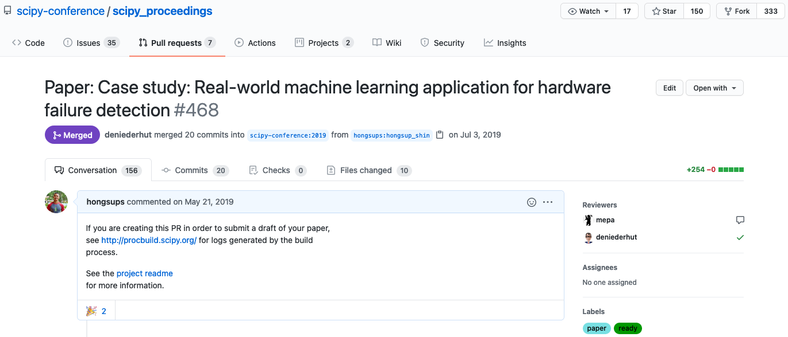

Last year, I was fortunate to have an opportunity to do a poster presentation at the Scientific Computing in Python (SciPy) conference. Every presenter has an option to submit a written proceedings and I decided to participate. I’ve never had a chance to present my ML work as a paper in industry, and so I thought it would be a good experience.
I was a bit intimated when the conference committees said authors should submit their manuscripts as pull requests in their proceedings repository in GitHub. They also said manuscripts should be written in reStructuredText. I have used git for many years but I have limited experience in collaborating with others on GitHub. Plus, I’ve never used reStructuredText (I’ve only used Markdown) and also have never written an academic manuscript in markup languages.
In short, I eventually became to really enjoy the process of using markup languages for writing manuscripts and using GitHub for review. I will briefly talk about my experience at the SciPy and talk about why I think you should give it a try.
Scientific writing in markup languages
There was a bit of learning curve but it wasn’t too difficult to get used to the reStructuredText syntax because there were some similarities between Markdown and reStructuredText (rst). The conference committee also provided examples. They also provided me with a PDF builder that I could run locally. This helped me preview the final version of the PDF when it’s fully rendered. This was useful especially to decide the location of figures. There was a custom LaTeX builder in their repository too, which was invaluable.
Compared with existing word processor softwares such as MS Word or Google Docs, using markup languages pose some challenges to the first-time users. First, you need to learn the syntax. There are some limitations on styling because not everything is rendered automatically (e.g., LaTeX) and sometimes you need to play with html and css files to get a more complex page layout.
However, there are many benefits as well:
- Every styling is written explicitly (e.g.,
**for bold in Markdown) and thus it is easily discoverable. - Code snippets can be automatically rendered in a standardized way.
- It’s easy and fast to publish the manuscript online, which makes it easy to share.
- Finally, with a right document builder, the above-mentioned pain points can be mitigated.
- It is much easier and convenient to review the manuscript (see below).
Using GitHub for submission and review


Once I finished writing the manuscript, I submitted the main document and image files as a pull request. It was pretty straightforward because I was working alone in my own branch (you can find my pull request here). A few weeks later, two reviewers started commenting on my pull request. The whole process was quite simple and very similar to a typical review process in academia: reviewers left comments on certain parts of the manuscript and I responded. It also reminded me of a code review process. This year, I volunteered at the SciPy 2020 as a reviewer. I reviewed a paper that was submitted as a pull request.
Benefits of GitHub for reviewing manuscripts
With these experiences, I learned that markup language with GitHub review process provides many benefits for scientific writing, compared with MS Word or Google Docs which are used in typical (academic) review process:
| Markup + GitHub review | MS Word or Google Docs + Academic review | |
|---|---|---|
| Discover exact changes | Yes | Possible but can be confusing when many changes occur in one place |
| Change versions easily | Yes | May need multiple versions (separate files) |
| Track communications | Yes | Challenging because comments happen in the margin, which has a very limited space. Otherwise, they are addressed in a separate space (like a letter). |
| Text override or unauthorized edits | No (permission needed) | Can happen if tracking option is off or multiple files exist |
| Group communication | Yes | No. Normally reviewers don’t talk to each other. Reviewers communicate individually with authors. |
| Immediate responsiveness | High (online comments) | Low. Letters or emails need to be exchanged, which can take months. |
| Communication transparency | High | Almost none (academic review). Normally double-blind. A reviewer can’t normally read other reviews during the review process. |
| Public transparency | Yes (public repositories) | Almost none. Very rare to publish the whole conversation between reviewers and authors. |
| One place for everything | Yes | No. Normally non-document type files exist in a different place. |
In short, the main benefit of using GitHub for reviewing manuscript comes from that GitHub is an excellent version control tool. It prevents reviews (new changes) and the manuscript (original file) from getting mixed up and allows us to track changes meticulously.
Another huge benefit is transparency. If our repository and pull requests are public, the entire review process can be seen by anyone. This way, every decision making process is tracked and stays public, which minimizes potential dispute or abuse between authors and reviewers. Given that academia is not capable of perfect self-governance and some academic disciplines have reproducibility problems, transparent review process like this can become a solution.
Final thoughts
It is true that markup languages may not always be perfect for writing a manuscript. Some people are more familiar with traditional word processing softwares where styles are immediately rendered and more style options are available. However, based on my experience with the SciPy conference, especially, being at the both ends of the review process, I can say the benefits of using markup language for scientific writing and using GitHub for review outweighs its caveats. Manuscripts written in markup languages can be easily reviewed in GitHub where we can utilize its excellent built-in tools to achieve better tracking, communication, and transparency.